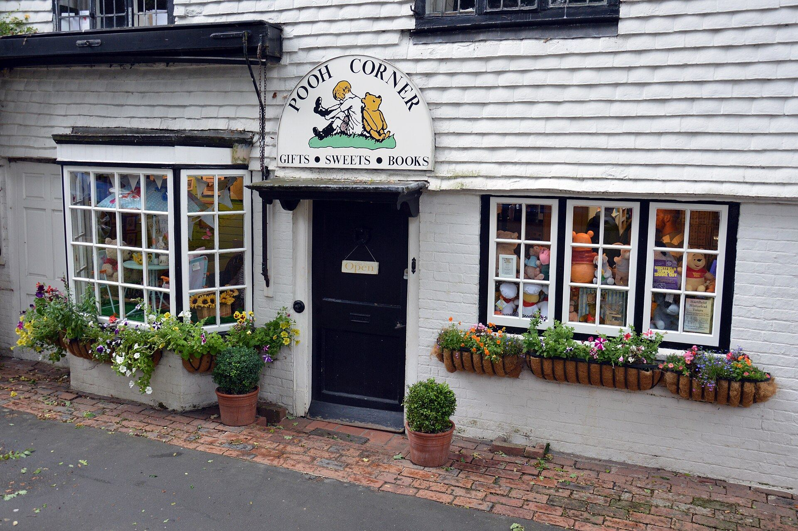
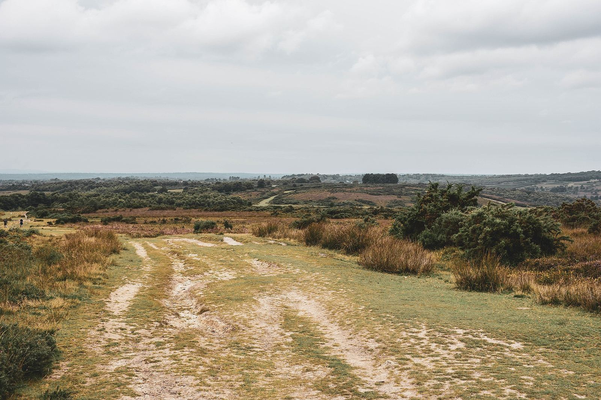

Our story
Three centuries on Hartfield High Street
A 1703 cottage, a village shop that a small boy once visited by donkey, and the families who turned it into Pooh Corner.

In Christopher Milne's words
“…in at the first shop on the left hand side. Jessica (my donkey) needed no urging and the woman behind the counter no instructions. It was a pennyworth of bullseyes for each of us.”
Christopher Milne, The Enchanted Places
Christopher Milne — the real Christopher Robin — remembered weekly trips to this shop as a boy. His family's country home was nearby, and the forest around Hartfield became the world of his father's stories.
Today Pooh Corner is a tearoom, gift shop and free museum, and the first stop for many visitors on their way to Poohsticks Bridge.
Timeline
Chapter by chapter
Each owner has respected the work of those before them, while adding something new.
- 1703
Sackville Cottage
The building is constructed and becomes known as Sackville Cottage, after the Sackville family.
- 1926
Winnie-the-Pooh is published
A.A. Milne's stories, illustrated by E.H. Shepard, bring the forest near Hartfield to readers everywhere.
- 1978
Pooh Corner opens
Potter Mike Ridley and his wife June open the gift and tea shop. Mike made Winnie-the-Pooh ceramics under licence and met Christopher Milne several times.
- 2013
A busy, much-loved shop
The Ashby family take over, and daughter Julie grows the shop into a favourite stop for Pooh fans.
- 2019
A museum is added
Neil and Samantha Reed become the owners and add a museum focused on A.A. Milne and E.H. Shepard.
- 2026
One hundred years of Pooh
The centenary of Winnie-the-Pooh — celebrated in Hartfield and in our anniversary collection.

The forest In which the stories began
Ashdown Forest, on our doorstep
Open heathland, clumps of pine and the famous bridge — a short drive or a long walk from the shop.